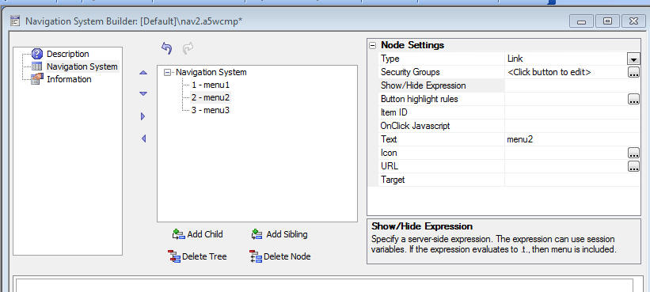

Navigation System Component - Server-side Show/Hide Expression
Subscription feature
You can now define a server-side show/hide expression. The expression can reference session variables. If the expression is .t. then the menu (and its children) are shown. If the expression is .f., then the menu (and its children) are eliminated from the menu.
